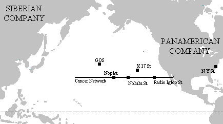

Le nord de la Banquise Pacifique vers 2220
Avertissement : cette carte est une interprétation personnelle de ma lecture des Baleines Solinas. Elle n'est donc pas exempte d'erreurs.
La carte est cliquable 